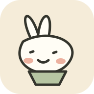

生活记录006
再改变一丢丢的生活
从武当山、旅行和吉他，到公路车和音乐剧。回头看看，这两年，我给生活添了些什么。
01 / ABOUT
我相信，人生不只有一条固定路线。
学习新技能、尝试新爱好、创造新东西，都是了解自己的方法。
你好，我是 Robin。我喜欢探索不同的生活方式，也始终对新知识保持好奇。最近正在学习 AI 与编程、音乐和戏剧表演，也热爱旅行、运动和阅读。这里记录我的学习、生活体验和创作作品。
02 / JOURNAL
把值得分享的思考，留在这里。
全部日志 · 3 篇
03 / PROJECTS
让想法慢慢变成真实可见的东西。

吃了什么、动了多久、体重的小变化。一个可爱的日常记录本。
从零开始制作的个人网站
让每次选择都带来不同故事的互动游戏
KEEP GOING